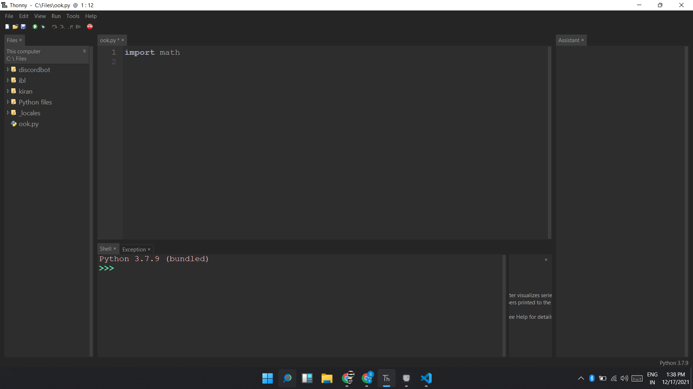
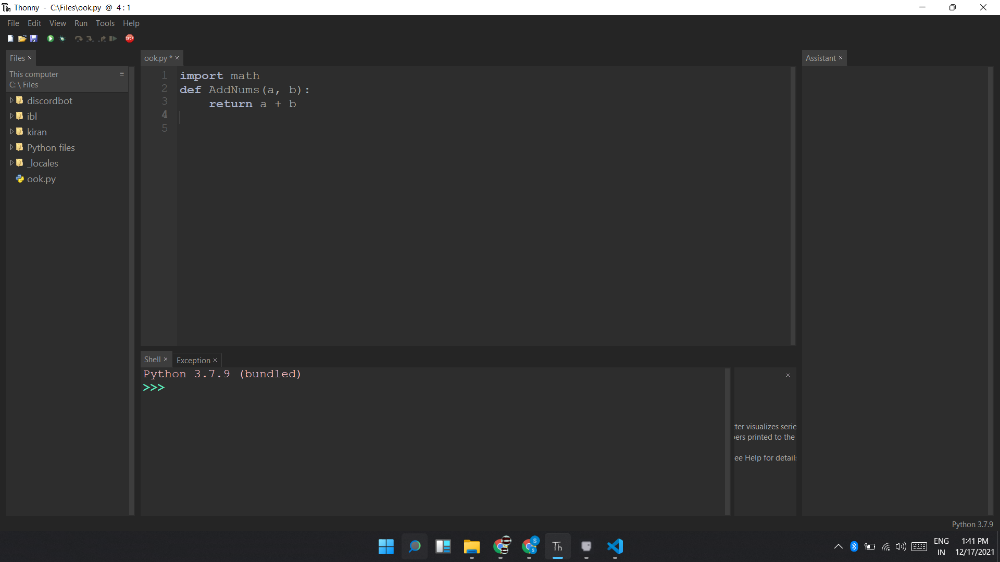
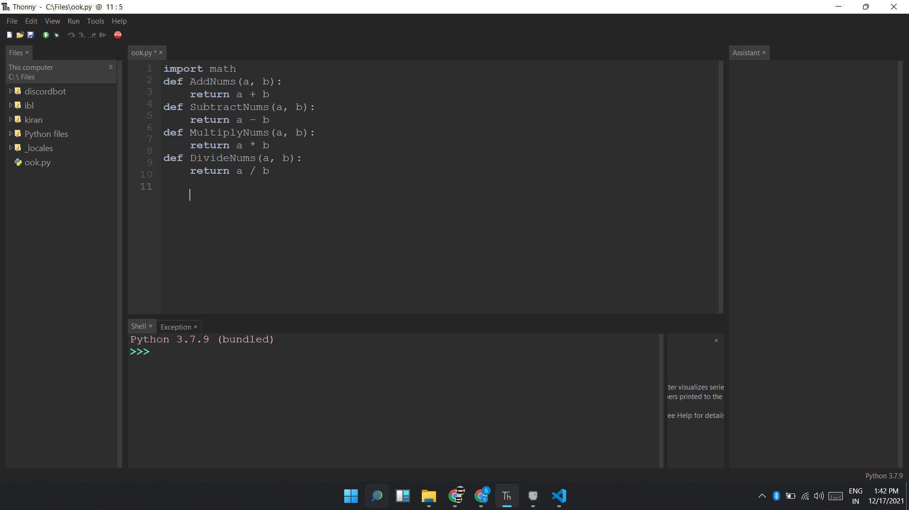
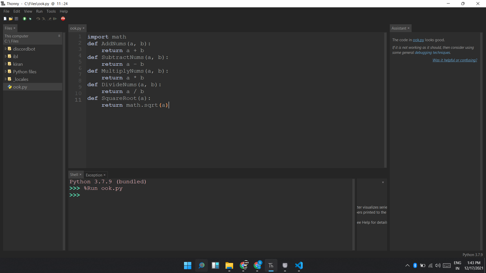
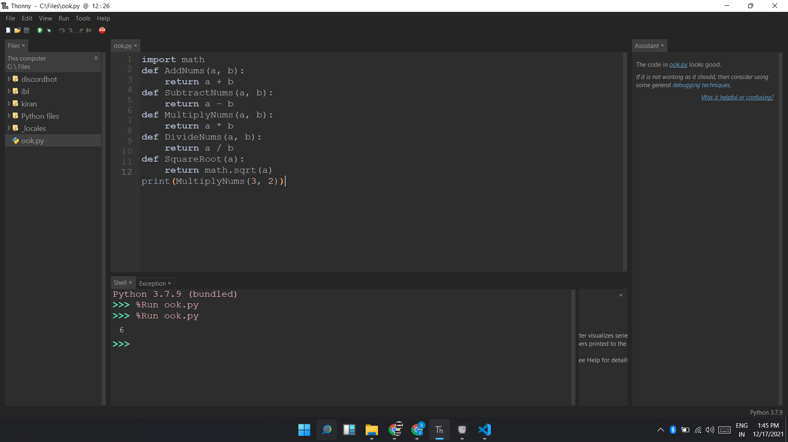
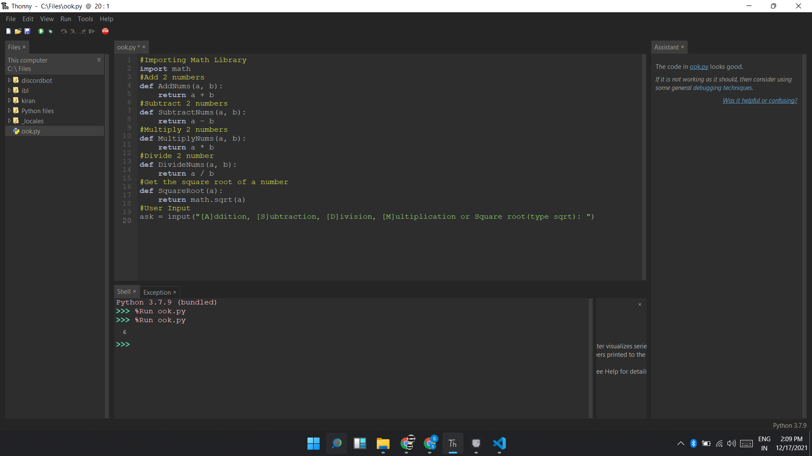

Hello People, Today I will show you how to make a very basic calculator which will add, subtract, multiply or divide two numbers. This will also find the Square root of a number. If you want the code you can scroll down to find it at the last. So let us start
Firstly we will import math module. It is a built in module so you don't have to install it.
Now we will create a function for adding two numbers and we will do it like this:
This takes 2 numbers as arguments and will return the result by adding it.
Now we will do the same three times more, but changing the operation and function name.
Now we will make the function for calculating square root.
This will take only one number as an argument, and using the math library's sqrt function, it will return the square root of the number given as an argument.
To see if they are working or not, we will print the function like this. In the arguments you can put any numbers you like.
This is working as expected. Now let's work on user input. For that we will create a variable to store our user input.
If the user says "A" we will call the AddNums function. If the user says "M" we will call the MultiplyNums function and so on.
Now let's type a if statement to see if the user has typed "a" or "A" then after that we ask them to input two numbers them after that, we will add those two numbers using our AddNums function then we will print out the result..
.png)
This code will check if we typed in "a" or "A" and if it is true then it will ask for the first number and second number, and store the input in two variables which are a and b, then using our AddNums function it will add those. Then finally it will print the result by saying "Your answer is " the "str" is for converting the answer which is an integer, into a string. Now we will do the same for other operations, but changing the function name.
It should look like this:
.png)
You have succesfully created a basic calculator inside of a python. If you want the code scroll down to find it. Thats all for this tutorial, I hoped you learned something from it. Bye!
#Importing Math Library
import math
#Add 2 numbers
def AddNums(a, b):
return a + b
#Subtract 2 numbers
def SubtractNums(a, b):
return a - b
#Multiply 2 numbers
def MultiplyNums(a, b):
return a * b
#Divide 2 number
def DivideNums(a, b):
return a / b
#Get the square root of a number
def SquareRoot(a):
return math.sqrt(a)
#User Input
ask = input("[A]ddition, [S]ubtraction, [D]ivision, [M]ultiplication or Square root(type sqrt): ")
if ask == "a" or "A":
a = int(input("Type first number: "))
b = int(input("Type second number: "))
result = AddNums(a, b)
print("Your answer is " + str(result))
elif ask == "S" or "s":
a = int(input("Type first number: "))
b = int(input("Type second number: "))
result = SubtractNums(a, b)
print("Your answer is " + str(result))
elif ask == "m" or "M":
a = int(input("Type first number: "))
b = int(input("Type second number: "))
result = MultiplyNums(a, b)
print("Your answer is " + str(result))
elif ask == "D" or "d":
a = int(input("Type first number: "))
b = int(input("Type second number: "))
result = DivideNums(a, b)
print("Your answer is " + str(result))
elif ask == "sqrt" or "SQRT":
a = int(input("Type number: "))
result = SquareRoot(a)
print("Your answer is " + str(result))